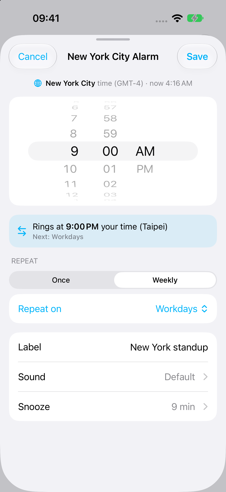

Smart Shift Calendar & Alarm
Repeat consecutive work days and rest days from a start date. Skip a shift without changing the cycle.
Set up a rotating shift alarm ›Alarm One is an iPhone alarm app for rotating shifts, future dates, and meetings across time zones. Create self-deleting alarms for temporary plans, choose your own sound, and keep your schedule in view.

Wake up for a rotating shift, schedule an exam-day alert, or join a call in another city. Choose the dates, repeat pattern, and sound that fit your plans.
Repeat consecutive work days and rest days from a start date. Skip a shift without changing the cycle.
Set up a rotating shift alarm ›Choose another city’s local time for remote meetings or travel. Alarm One handles time zone and daylight saving conversion.
Set an alarm for another time zone ›Keep naps, flights, and temporary alerts tidy. Enable delete after ringing so used alarms leave your list.
Automatically delete alarms after use ›Choose built-in tones or import your own MP3, WAV, and other supported audio. Custom import requires iOS 26.1+ and Pro.
Use your own alarm sound ›Set an alarm for a specific future date and review upcoming alarms in the calendar view. Keep exams and appointments visible.
Schedule an alarm for a specific date ›Organize work and personal alarms into groups, see upcoming alarms in widgets, and sync your alarm list across Apple devices.
Choose the right alert for your routine ›Add a city in World Clock. Swipe right to add an alarm, then choose Once or Weekly in the city's time. Check the local-time preview before saving. City alarms require Pro.
Set a reminder for 9:00 AM New York even when you're in Paris or Tokyo.
Call at a good local hour without checking a world clock first.
Anchor wake-ups to the city you're landing in before your body catches up.
Your schedule can change without becoming harder to manage. Use a work/rest rotation for shifts, a specified date for an appointment, and a city-based alarm for your next global call.
Perfect for One-Time Alarms!
This app is so useful! I was scared of oversleeping for my early morning flight, so I set a bunch of alarms. The best part is I don't have to delete them one by one afterwards. Total lifesaver for travel!
★★★★★App Store User
Easy to use
Like the app. Simple and reliable for managing multiple alarms without the clutter.
★★★★★App Store User
Great for custom repeats
I use it for alarms that do not fit a simple daily schedule. Much cleaner than keeping a long list of old alarms.
★★★★★App Store User
Alarm One adds work/rest rotations, specified dates, city-based scheduling, optional delete after ringing, custom sound import, alarm groups, calendar views, and widgets.
Yes. In Alarm One, create an alarm that rings once, enable Specified Date, and select the future date and time. The regular Clock alarm editor offers times and weekday repeats.
Create a temporary alarm in Alarm One and enable “Delete this alarm after it rings.” This removes that Alarm One alarm after use; it does not delete entries from Apple’s Clock app.
Yes. With Alarm One Pro on iOS 26.1 or later, import a playable MP3, WAV, AIFF, CAF, or M4A file from Files, select it in the sound picker, and save the alarm.
Choose a target city and set its local time in Alarm One. The app calculates the local equivalent using the city’s time zone and daylight saving rules.
Yes. Choose Workday → Rotation, set the first work date, and enter the consecutive work and rest day counts. For changing start times or irregular rosters, use separate specified-date alarms.